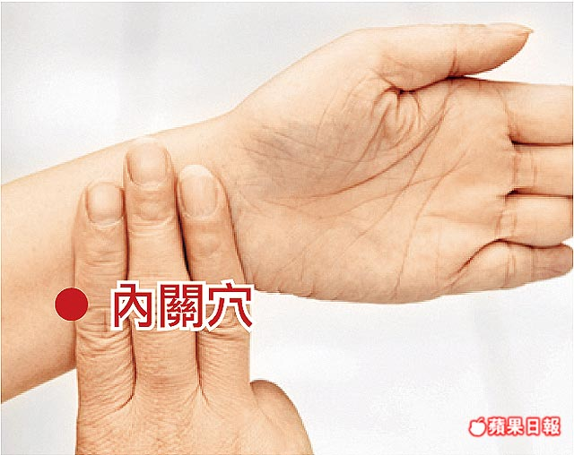

上班族生活壓力大，容易緊張焦慮，加上拼業績、超時工作往往造成睡眠品質不良，無法獲得真正的休養生息。根據統計，約三分之 一國人約近 7 百萬人有失眠方面的問題。
一、失眠的定義
一般沒有失眠困擾的人，大約在就寢後半小時之內可以入睡。失眠指的是夜間得不到充分睡眠，白天感到疲倦，致使工作及生活品質 降低、身體機能衰弱。
二、失眠的臨床表現
因為無法入睡睡眠不足，或是眠淺易醒多夢睡眠品質不佳，導致精神委靡，注意力不集中，同時兼有耳鳴、健忘、手顫、頭腦昏脹、 容易動怒、心悸、健忘、疲倦之症狀。此外，失眠易引發心臟病、糖尿病、肥胖症、憂鬱、焦慮、恐慌等疾病。
三、失眠的原因
- 壓力因素：接觸新的環境或不熟悉的人、事、物。
- 心理因素：情緒高昂、焦慮、害怕、擔心。
- 環境因素：太吵、太亮、更換睡覺的地方。
- 病情影響：躁症（情緒高昂）、憂鬱症（情緒低落）、精神分裂症（幻聽干擾）、精神官能症（焦慮）。
- 身體疾病：疼痛、呼吸道疾病、過敏、內分泌失調等。
- 飲食習慣：晚餐吃太飽、吃刺激或含咖啡因的食物、餓著肚子入睡。
- 作息習慣改變：白天睡覺，晚上睡不著、就寢時間不規則、輪班。
- 濫用藥物或酒：吸食安非他命或喝酒等。
四、中醫治療失眠
失眠在古代書籍中稱為“不得眠”、“目不暝”。中醫認為失眠 是由於外感或內傷等病因，致使心、肝、膽、脾、胃、腎等臟腑功能失調，心神不安而成本病。中醫將失眠的原因歸因於：思慮勞倦，內 傷心脾，陽不交陰，心腎不交，陰虛火旺，肝陽擾動，心膽氣虛以及胃中不和等因素，均可影響心神而導致不寐。此外，老人陽氣衰，更 年期陰虛內熱等亦會影響睡眠。
- 治療方面，若屬身體疾病而致失眠者，以先治療疾病為主；若屬外感或內傷而致失眠者，依中醫理論失眠可分以下証型：
- 心火熾盛：心煩不寐，躁擾不安，口乾舌燥，小便短赤，口舌生瘡，舌尖紅，苔薄黃。治法宜清瀉心火，安神寧心。
- 肝鬱化火：急躁易怒不寐，頭暈頭脹，口苦，多夢，目赤耳鳴，便秘溲赤，脈弦數。治法宜清肝瀉火，鎮心安神。
- 痰熱內擾：胸悶心煩不寐，泛惡，噯氣，頭重目眩，苔黃膩，脈滑數。治法宜化痰清熱，和中安神。
- 胃氣失和：胸悶噯氣，脘腹不適不寐 脘腹脹滿，大便不爽，苔膩脈滑。治法宜和胃健脾。
- 陰虛火旺：心悸心煩不寐，腰痠足軟 頭暈耳鳴，健忘遺精，脈沈細。治法宜滋陰降火，交通心腎。
- 心脾兩虛：多夢易醒，心悸健忘，神疲食少，面色少華，四肢倦怠，舌淡脈細。 治法宜補益心脾，養心安神。
- 心膽氣虛：多夢易驚，膽怯心悸，倦怠少力，脈弦細。治法宜益氣鎮驚，安神定志。
又依中醫理論，晚上 11 點－凌晨 1 點人體的氣血走至膽經，凌晨 1 點－3 點氣血走至肝經，這段時間是讓身體休息的好時機。肝藏 血且肝開竅於目，失眠導致肝血不足主要表現在肝血不能榮筋養目等方面，臨床上以肢麻不仁、關節屈伸不利、爪甲不榮等筋脈失養和眩 暈眼花、兩目乾澀、視物模糊等血虛不能上榮頭目之徵為特點。加上現代人長時間使用電腦工作，生活上使用手機等電子產品，皆容易加 重眼睛疲勞視力減退的問題。
治療失眠用中藥調理、針灸外，按摩穴位與食療都能幫助入眠。中藥在治療失眠上有不會成癮、可以正常工作而不受影響的優點。針 灸可疏通經絡，紓壓解鬱，具有簡易、經濟、有效的特點。民眾可自行按摩幫助睡眠的穴位，如神門穴及內關穴等穴位，也都具有寧心安 神的作用。
五、穴位按摩
- 神門：有鎮靜、安神、寧心、通絡作用。 取穴：豌豆骨後緣撓側，掌後第一橫紋上。〈筋之內側〉。
- 內關：有安神寧心、鎮痛理氣之功。 取穴：掌後第一橫紋正中直上二寸，當兩筋中間。

六、藥膳對失眠也有一定療效，市立中醫醫院介紹兩種藥膳給讀者參考。
藥膳(一)：明目杞菊圓(4 人份) 【材料】 枸杞子 1 錢、金菊花 1 錢、熟地黃 1 錢、山茱萸 1 錢、山藥 1 錢、牡丹皮 1/2 錢、茯苓 1 錢 蝦仁 150 公克、絞肉 100 公克、香菇 2 朵、草菇 2 朵、韮黃 75 公克、豆乾 35 公克、紅蘿蔔絲 35 公克、調味料適量、麵粉適量 【作法】 1. 藥材以 2 碗水熬成 1 碗備用。 2. 麵粉加水揉成糰，分小塊、桿成圓皮備用。 3. 香菇、草菇、韭黃、豆乾等洗淨，切細。 4. 起油鍋，將蝦仁、絞肉、香菇、草菇、韮黃、豆乾、紅蘿蔔絲等 炒香，加藥汁及調味料再炒至收汁作餡。 5. 取麵粉皮包餡料，並捏成小包子狀，蒸熟即可。 【適應症】 眼睛易疲勞、酸澀及自汗、盜汗。 營養含量：
| 熱量(大卡) | 碳水化合物(公克) | 脂肪(公克) | 蛋白質(公克) | |
|---|---|---|---|---|
| 4人份 | 810.5 | 101 | 20 | 56.5 |
藥膳(二)：茯神山藥排骨湯（4 人份） 【材料】 排骨半斤、新鮮山藥半斤、杏鮑菇 200gm、紅蘿蔔 300gm、茯神 2 兩、百合 2 兩、蓮子 2 兩、枸杞子 3 錢 【作法】 1.排骨洗淨川燙。 2.將茯神、百合、蓮子、枸杞子洗淨。 3.將 1200c.c.水煮滾，放入排骨及藥材用小火一起熬煮 1 小時。 4.再將山藥、杏鮑菇放入煮 10 分鐘。 5.最後將枸杞子放入，熄火即可食用。 【適應症】 眼睛疲勞乾澀、更年期煩躁失眠。 營養含量：
| 熱量(大卡) | 脂肪(公克) | 蛋白質(公克) | ||
|---|---|---|---|---|
| 4人份 | 810.5 | 101 | 20 | 56.5 |
七、生活起居衛教
- 養成規律正常作息時間：每日按時上床入睡及起床；午睡以不超過30 分鐘為限。
- 不要強迫自己入睡，如果躺在床上超過三十分鐘仍然醒著，就起床做些溫和的活動，直到想睡了再上床。
- 飲食宜忌：飲食宜清淡，忌食辛辣刺激物，如辣椒、大蒜、胡椒等；中午以後少碰刺激性飲料(如咖啡、茶葉)，除較不影響睡眠外，也可減少半夜起床上廁所的頻率。
- 飲食習慣：避免睡前大量進食，以免影響入睡後的腸胃系統。
- 養成規律的運動習慣，有容易入睡、睡的更深、半夜較少醒來的好處，但就寢前 3、4 小時避免運動。
- 睡前三小時不飲酒不吸菸。
- 雙腳浸泡溫水，有鎮靜安神之功。現代人用腦過度、身體運動則相對不足，以致氣血集中頭部，自然難以入睡。利用熱水泡腳，可引氣血下行，故對睡眠障礙有改善作用。
- 維持舒適的睡眠環境：適當室溫、燈光、少噪音及舒適床墊。
- 避免使用床或臥房為其他睡眠的活動場所，如看電視、打電話、討論事情。